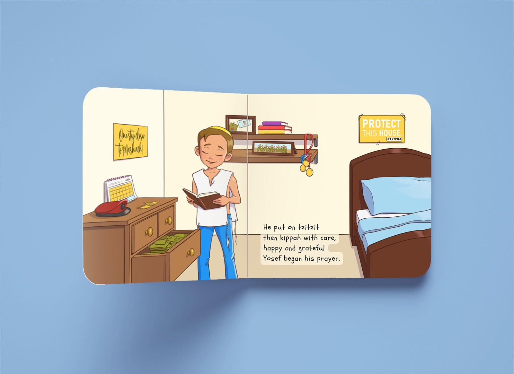

This children's book is dedicated to the memory of my cousin, Yosef Malachi Guedalia, a brave soldier who gave his life protecting civilians on October 7th, 2023.
The book was inspired by my twin boys, both named after Yosef. I wanted to share with them the remarkable person behind their name and convey important lessons about kindness and courage—values Yosef exemplified every day.
Throughout the pages, I have incorporated small details from Yosef's life, such as hints of his favorite activities, posters from his room, and even Clif Bars, a favorite snack.
If you have any questions, feel free to reach out at avigailguedalia@gmail.com.
To read more about Yosef and his story, visit the Instagram page dedicated to his memory.